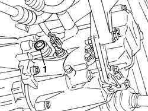
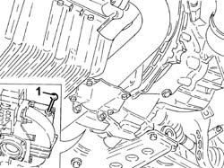
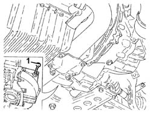

2110A04 Manual gearbox and differential OIL - Check level and top up, if necessary
- Path
- Procedures > 21 GEARBOX > 2110 MANUAL GEARBOX AND DIFFERENTIAL > 2110A manual gearbox and differential assembly > 2110A04 Manual gearbox and differential OIL - Check level and top up, if necessary
- Kind
- repair procedure (removal / refitting; the operation number is the code)
- Applies to
- engines: 1.6 TS , 1.8 TS, 2.0 JTS, 2.5 V6, 3.2 V6, 1.9 JTD 8v , 2.0 JTS, 2.4 JTD 10v; all production periods
- Interactive page
- https://sloeber94.github.io/elrnDB-a156/en/#/3237923
Applies to: all engines; all production periods
Applies to: engines: 1.6 TS , 1.8 TS, 2.0 JTS, 2.0 JTS; all production periods
Place car on the lifting bridge.
1. Remove oil filling cap and check oil level grazes filling hole lower edge.

Applies to: engines: 1.6 TS , 1.8 TS, 2.0 JTS, 2.0 JTS; all production periods
If necessary, top up by pouring oil through filling hole.
 | Type | Component | Name | Qty. |
|---|---|---|---|---|
- | Oli [l] | MANUAL GEARBOX | Tutela ZC 75 SYNTH | 2 |
Clean filling cap and tighten it to the prescribed couple.
 | Fastening | Component | Ø | Value (daNm) |
|---|---|---|---|---|
- | Plug | GEAR CASING PADS | M22 | 3.0 - 4.8 |
Applies to: all engines; all production periods
Applies to: engines: 1.9 JTD 8v , 2.4 JTD 10v; all production periods
1. Using the dipstick, check that the level of the transmission fluid for the manual gearbox and differential coincides with the reference.
If necessary, top up the level, introducing the recommended fluid through the opening in the dipstick.
| Type | Component | Name | Qty. |
|---|---|---|---|---|
- | Oli [l] | MANUAL GEARBOX | Tutela ZC 75 SYNTH | 2 |

Applies to: engines: 1.9 JTD 8v , 2.4 JTD 10v; all production periods
Check the oil level once again, then refit the dipstick.
Applies to: engines: 2.5 V6, 3.2 V6; all production periods
.
1. Using the dipstick, check that the level of the transmission fluid for the manual gearbox and differential coincides with the reference.
If necessary, top up the level, introducing the recommended fluid through the opening in the dipstick.
| Type | Component | Name | Qty. |
|---|---|---|---|---|
- | Oli [l] | MANUAL GEARBOX | TUTELA CAR MATRYX | 2.0 |

Applies to: engines: 2.5 V6, 3.2 V6; all production periods
Check the oil level once again, then refit the dipstick.
Topics that link to this page (8)
- S20 GEARBOX DIFFERENTIAL UNIT NOISY'/ / GENERAL
- S22 NOISE' GEARBOX / IN NEUTRAL
- X15 GEARBOX/DIFFERENTIAL OIL LEAKS
- 0010K80 80,000km service coupon - emission control versions
- 0010M60 160,000km service coupon - emission control versions
- 0010T40 MANUAL GEARBOX OIL - Check level and top up, if necessary
- 1084C10 engine oil heat exchanger - r + r
- 2710A37 oil filter mount/intermediate drive shaft bearing - r+r